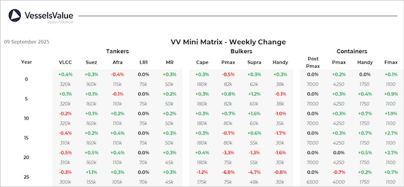

inWeekly Vessel Valuations Report09/09/2025

Bulkers:Bulker values have fluctuated this week, with older tonnage seeing a large decrease due to second-hand sales
Kamsarmax BC Yasa Neslihan (82,800 DWT, Oct 2005, Tadotsu Tsuneishi) sold SS/DD Passed to Unknown Chinese buyers for USD 10.6 mil, VV Value USD 10.55 mil
Kamsarmax BC Ultra Jaguar (81,900 DWT, Jan 2016, Tsuneishi Zhoushan) sold to Great Eastern Shipping for USD 24 mil, VV Value USD 24.1 mil
Supramax BC Konya (63,200 DWT, Jul 2013, Yangzhou Dayang Shipbuilding) sold to Allseas Marine SA for USD 18.36 mil, VV Value USD 18 mil
2 x Handy BC Mykonos & Madrid (c. 30,100 DWT, Jul 2013, Tsuji) sold in an en bloc deal to Dramar Shipping for USD 22 mil, VV Value USD 23.29 mil
Tankers:Tanker values see stability this week as S&P activity remains slow, due to geopolitical tensions, including a Houthi missile strike, continuing to impact Red Sea shipping risks
VLCC Monaco Loyalty (307,300 DWT, Jul 2007, Dalian Shipbuilding Industry Corp) sold DD Due to undisclosed buyers for USD 42 mil, VV Value USD 43.49 mil
Suezmax Constantios (158,000 DWT, Nov 2009, Hyundai Samho HI) sold SS/DD Passed to undisclosed buyers for USD 40 mil, VV Value USD 39.58 mil
Containers:Midage Feedermaxes are up following a recent sale, other sectors remain stable mirroring the charter market
Handy Container Alexander L (1,368 TEU, Jul 2011, Wuhu Xinlian Shipbuilding) sold for USD 19 mil, VV Value USD 18.71 mil
Feedermax Nordic Porto (1,084 TEU, Jan 2011, Nanjing Wijiazu) sold for USD 14.61 mil, VV Value USD 13.48 mil
